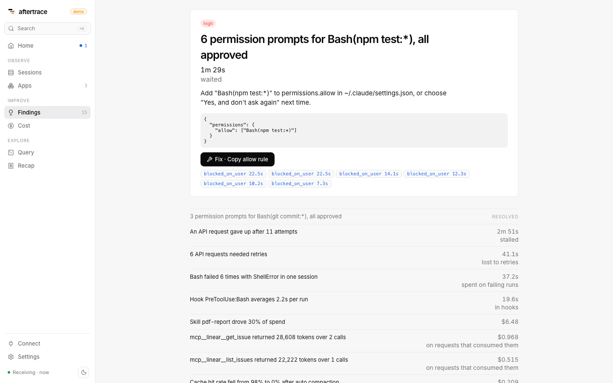

Findings
Each finding is one row from a SQL file in rules/. The engine embeds a copy of those files from internal/rules/files/. They must be identical (go test ./internal/rules checks that).
A finding always has a severity (high / medium / low), a headline, an impact (number + unit), a detail, a recommendation, evidence {trace_id, span_id, label}, and session ids. Evidence chips in the UI open the waterfall on that span.
aftertrace demo fires every shipped rule. Screenshot:

-- @min_version on each file is the Claude Code version whose attributes the query needs. The engine does not skip on version yet; a missing column just yields no rows.
Several rules need OTEL_LOG_TOOL_DETAILS=1 for real names. Without it, skill / plugin / MCP names collapse to custom or third-party, and Bash patterns cannot use full_command. See claude-code-setup.md.
permission.allow_rule_candidate
Allow rule would remove repeated prompts. Pillar: bottleneck. Min version: 2.1.0.
Detects a permission pattern you approved at least three times (decision = accept, source user_temporary or user_permanent). Pattern is tool_name, or for Bash Bash(<first two words of full_command>:*), else Bash(<bash_argv0>:*). Skips rm and git push.
Evidence: the claude_code.tool.blocked_on_user wait spans, labeled with wait time. Impact: seconds waited. High if that sum is over 60s.
Do this: add the pattern to permissions.allow in ~/.claude/settings.json, or choose "Yes, and don't ask again" next time. Coarse without OTEL_LOG_TOOL_DETAILS (Bash(npm:*) instead of Bash(npm test:*)).
retry.waste
Time lost to API retries. Pillar: bottleneck. Min version: 2.1.0.
Detects successful claude_code.llm_request spans with attempt > 1. Waste is span start to the last gen_ai.request.attempt span event.
Evidence: those request spans (×N attempts, Ts lost). Impact: seconds. High if the sum is over 60s.
Do this: retries are server-side or network. If they cluster in time, check status and consider a fallback model. If they cluster on one network, check the proxy.
retry.exhausted
Retries exhausted. Pillar: bottleneck. Min version: 2.1.0.
Detects an api_retries_exhausted event. Joins the failed claude_code.llm_request span on the same trace.
Evidence: that span, labeled with attempt count. Impact: total_retry_duration_ms in seconds. High.
Do this: re-run the turn. If it repeats, raise CLAUDE_CODE_MAX_RETRIES (cap 15) or set CLAUDE_CODE_RETRY_WATCHDOG for unattended runs. The detail line says whether a later api_request in the session recovered.
cache.drop_after_compaction
Cache drop after compaction. Pillar: cost. Min version: 2.1.0.
Detects a successful compaction event whose next main-thread llm request (not query_source = compact) has a cache hit rate at least 30 points below the mean of the five requests before.
Evidence: the compaction event and the rewrite request. Impact: USD on the compact requests in a 120s window plus the rewrite.
Do this: expected once per compaction. If it is frequent, start a fresh session at natural breakpoints, run /compact yourself between tasks, and keep large tool output off the main thread (subagent).
model.switch_cache_rebuild
Model switch rebuilt the cache. Pillar: cost. Min version: 2.1.0.
Detects consecutive main-thread, non-compact, non-error llm requests where model changes and cache_read_tokens = 0.
Evidence: the rebuild request (0 cache read, N cache write). Impact: USD on that request. Low.
Do this: prompt caches are per model. Pick the model at session start, or switch at a /clear boundary. For a one-off hard step, delegate it to a subagent on the bigger model.
skill.cost
Expensive skill. Pillar: cost. Min version: 2.1.273.
Detects a skill.name on api_request that is ≥25% of all cost_usd, or ≥$1 per skill_activated, or ≥$1 with zero activations.
Evidence: the five costliest llm requests for that skill. Impact: USD.
Do this: try a lower effort or a cheaper model for that skill and compare output. Needs v2.1.273 and OTEL_LOG_TOOL_DETAILS for a real skill.name.
plugin.skills_unused
Plugin skills never used. Pillar: config. Min version: 2.1.273.
Detects a plugin_loaded event with skill_path_count > 0 in at least three sessions, no skill_activated for that plugin.name, excluding the placeholder name third-party.
Evidence: none (empty list). Impact: session count. Low.
Do this: disable the plugin if you do not use it. Loaded skill descriptions sit in context on every request (inferred; telemetry does not measure the tokens). Without OTEL_LOG_TOOL_DETAILS, third-party plugin names are third-party and this rule ignores them.
tool.repeated_errors
Repeated tool failures. Pillar: bottleneck. Min version: 2.1.268.
Detects two or more claude_code.tool.execution spans in one session with success = false and the same tool_name, target (full_command / bash_argv0 / tool_name), and error_class.
Evidence: the execution spans. Impact: seconds spent on failing runs.
Do this: if it is environmental (missing deps, wrong cwd), fix it once and record the fix in CLAUDE.md so the model stops rediscovering it. Test-driven loops where failures are the point will also match.
hook.overhead
Slow hooks. Pillar: bottleneck. Min version: 2.1.0.
Detects hook_execution_complete events whose mean total_duration_ms per hook_name is ≥1000 ms.
Evidence: turns that ran the hook. Impact: total seconds in that hook. Medium if total > 10s, else low.
Do this: narrow the matcher so it runs on fewer calls, or move slow work to PostToolUse or an async check. The rule does not recommend removing a security hook.
mcp.large_results
Large MCP tool results. Pillar: cost. Min version: 2.1.273.
Detects tools rows whose tool_name starts with mcp__ and result_tokens > 10000, grouped by tool.
Evidence: those tool spans, largest first. Impact: USD on llm requests attributed to that mcp_server.name / mcp_tool.name.
Do this: ask the server for narrower results (filters, limits, fields), or call it from a subagent so only a summary reaches the main thread.
app.model_downgrade
A smaller model would do. Pillar: cost. Apps only.
Detects an app operation with at least 10 successful calls to an Opus, Sonnet or Fable model where 90% of outputs are under 60 tokens: classification, routing, extraction.
Evidence: the costliest calls. Impact: USD, the difference between what the calls cost and what the same tokens cost on claude-haiku-5-5 (from prices).
Do this: switch the operation to Haiku, run your own examples through both, and keep the bigger model only where answers differ.
app.errors
Model calls failing. Pillar: bottleneck. Apps only.
Detects an app where at least 3 model calls, and at least 5% of them, failed (is_error or error.type).
Evidence: the five newest failures. Impact: calls failed. The detail names the most common error.type.
Do this: for rate_limit_error, retry with backoff and jitter, spread bursts, or raise the usage tier; for overloaded_error, retry and consider a fallback model; otherwise open a failure and read the status message.
app.no_prompt_cache
Prompt caching is off. Pillar: cost. Apps only.
Detects an Anthropic operation with at least 10 calls averaging over 2,000 input tokens and no cache reads or writes at all.
Evidence: the largest calls. Impact: USD at most, 90% of the input cost after the first call, assuming the whole input repeats. Real savings are lower; the finding is low severity for that reason.
Do this: mark the stable prefix (system prompt, tools, documents) with cache_control and put per-call content after it. If gen_ai.usage.cache_read.input_tokens stays zero, something early in the prompt changes on every call.